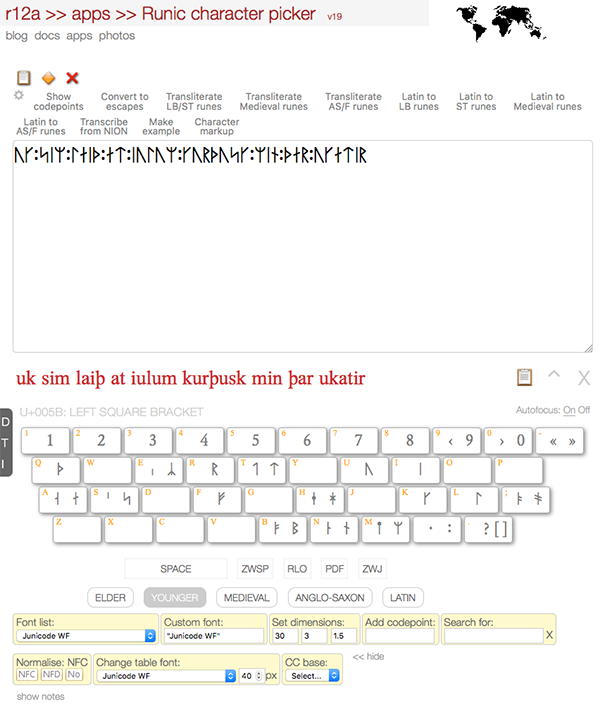
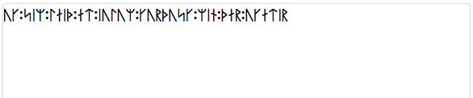
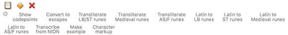
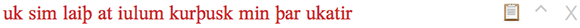
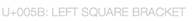
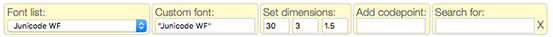

This Unicode character picker allows you to produce or analyse runs of Runic text. Character pickers are especially useful for people who don't know a script well, as characters are displayed in ways that aid identification.
Note that the Latin characters provided in this picker are for standard transliterations of runes, and you may need different characters to represent transcriptions into actual Old Norse or Anglo-Saxon, etc, text. (For that, see the Old Norse and Old English pickers.)
Writing in runes is not an exact science. Actual runic text is subject to many variations dependent on chronology, location and the author's idiosyncracies. It should be particularly noted that the automated transcription tools provided with this picker are intended as aids to speed up transcription, rather than to produce accurate renderings of specific texts. The output may need to be tweaked to produce the desired results. It should also be noted that the transcription tools do not produce bind-runes (ie. ligated forms), since there is no way that i'm aware of to produce such in Unicode.
Basic use
To produce characters in the text area, click on character shapes, or use your keyboard for Latin characters, delete, etc. Then cut & paste the result to your document, or use the controls to get further information about the characters. You must have JavaScript enabled.
Sample text If you want to add some sample text to the text area, click on the  icon.
icon.
Fonts
To properly display the text you will need to choose a font that is loaded on your system or device, or use the web font downloaded with the page (Junicode and Doulos SIL).
Mobile devices
When working on an iPad or similar device, you should turn off Autofocus (just below the text area). This prevents the keyboard popping up after you input every character. You may also need to select a character twice to add it to the output field.
Interactive help
Select the thing you want help with:

Text area

This is where you see characters appearing as you select them from the panels lower down or where you paste text into the picker. Once you have some text here, you can perform various operations on it, or simply copy it to the clipboard for use elsewhere.
The controls just above the text area allow you to interactive with the text in various ways. They mostly work on highlighted text within the text area, or if there is no highlight they work on all the text. Controls near the bottom of the picker allow you to change font, font size, line-height, text direction, etc.
Controls above the text area

Controls above the input box allow you to run various operations on the text in the box. Most of them work on what you have selected within the box, or the whole box if nothing is selected.
Copy, select, delete, etc. ( ). The icons on the left above the input box allow you (listing them from left to right) to copy the text to the clipboard, select the text, delete it, generate a URL to share with others that will reproduce for them what you see in the text box, add some sample text to the text area, and open this help file.
). The icons on the left above the input box allow you (listing them from left to right) to copy the text to the clipboard, select the text, delete it, generate a URL to share with others that will reproduce for them what you see in the text box, add some sample text to the text area, and open this help file.
Show codepoints. Produces a list of the Unicode code points in the input box. You can usually follow a link from a code point item to more detailed information about that character.
Convert to escapes. Opens a new window for the converter app, which shows various different ways of representing the text in the input box using escapes.
Transliterate LB/ST runes. Produces a transliteration of runic text written in the Younger Fuþark (either Long Branch or Short Twig versions).
Transliterate Medieval runes. Produces a transliteration of runic text written in the Medieval Fuþark.
Latin to LB Runes. Converts a latin transliteration into runic text, using the Long Branch variants of the Younger Fuþark.
Latin to ST Runes. Converts a latin transliteration into runic text, using the Short Twig variants of the Younger Fuþark.
Latin to Medieval Runes. Converts a latin transliteration into runic text, using the Medieval Fuþark.
Latin to AS/F Runes. Converts a latin transliteration into runic text, using the Anglo-Saxon/Frisian Fuþorc.
Transcribe from NION. The online PDF version of A New Introduction to Old Norse (such as the reader) has strange encoding quirks, for example representing ð as › and þ as fl. If you copy paste text from the PDF into the output box, you can use this feature to convert the text into Unicode. One warning: fi is converted to Þ, but occasionally it is meant to represent fi.
Make example. This may be useful to speed up the creation of examples. You can create an example with four parts, delimited by /, in the following order: [1] Runic text, [2] IPA transcription, [3] other transcription, [4] meaning. You don't need to add all four elements, but if you want to skip one in the middle of the sequence, use //.
Character markup. This may be useful to speed up the creation of markup for a specific character or set of characters. Select one or more characters in the text area, then click this button. It will return something like the following for each of the characters:
<span class="codepoint"><span lang="ang">ᚠ</span> <span class="uname">U+16A0 RUNIC LETTER FEHU FEOH FE F</span></span>
When you add it to your document, it will look like this.
ᚠ U+16A0 RUNIC LETTER FEHU FEOH FE F
Secondary text area

This area receives the output of various tools. Note that the text is editable.
The icons to the right (  ) allow you to copy the contents of this area to the clipboard, insert the contents into the main text area, or close this subwindow, respectively. When you insert the contents of this subwindow into the main text area, the text will overwrite any highlighted text, otherwise it will just be inserted at the current cursor position.
) allow you to copy the contents of this area to the clipboard, insert the contents into the main text area, or close this subwindow, respectively. When you insert the contents of this subwindow into the main text area, the text will overwrite any highlighted text, otherwise it will just be inserted at the current cursor position.
Some conversions produce ambiguous output. In this case, you will be offered two alternatives on a yellow background, eg.  presents you with the alternatives 'h' or 't'. Simply click on the alternative you want, and the picker will discard the rest.
presents you with the alternatives 'h' or 't'. Simply click on the alternative you want, and the picker will discard the rest.
Character names

As you mouse over characters in the selection areas of the picker, you will see the code point and character name appear here.
Autofocus

When working on an iPad or similar device, you should set this to Off. This prevents the keyboard popping up after you input every character.
Controls on the yellow background

Left-hand controls. These controls at the bottom of the page allow you to modify fonts used, the font size, line height, and the height of the text area.
Add codepoint. You can add characters to the text area by typing codepoints and escapes in the Add codepoint field and hitting return. This will accept HTML numeric character references, javascript and other programming escapes, U+ Unicode notation, or just simple codepoint numbers separated by spaces. All codepoint numbers (including those in escapes) must be hexadecimal.
Search for. If you are searching for a particular character and know (at least part of) the name or the codepoint, type that in the search box and hit return. All characters with matching text in the name or codepoint number will be highlighted. The highlighting is only removed when you click on the X next to the search input field. You can also use regular expression syntax to improve your search results. For example, to find the letter 'ha', but not 'gha' etc, you can use \bha\b (or the shortcut, :ha:).
More controls

Click on more controls to reveal the less commonly used controls described here.
Normalise. All text is added to the main text area in Unicode normalisation form NFC by default. You can change to NFD or no normalisation by clicking on the buttons in the yellow area. Note that normalization only takes place when you click on a character – text pasted into the box won't be normalised until you click on another character above, or click on a button in the yellow area.
Change table font. Allows you to change the font and size of the characters you click on in the main selection areas.
CC base. You would normally expect combining characters, such as accents and vowel signs, when displayed alone to be associated with a dotted circle, however these font glyphs are handled inconsistently from one browser/font to the next. The picker is set up for a given web font initially, but if you change the table font you may need to do something to ensure that combining characters display in a way that helps you click on them.
The CC base control allows you to specify a base character that will be used before each combining character (or no base character). This should hopefully help for most font and browser combinations.